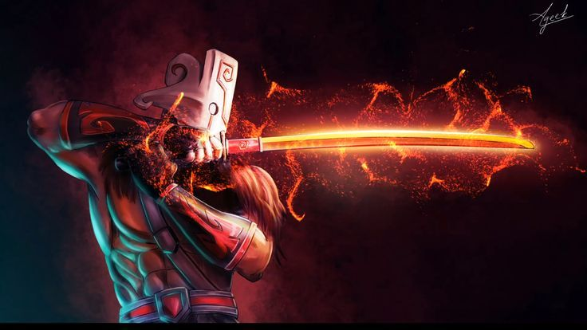
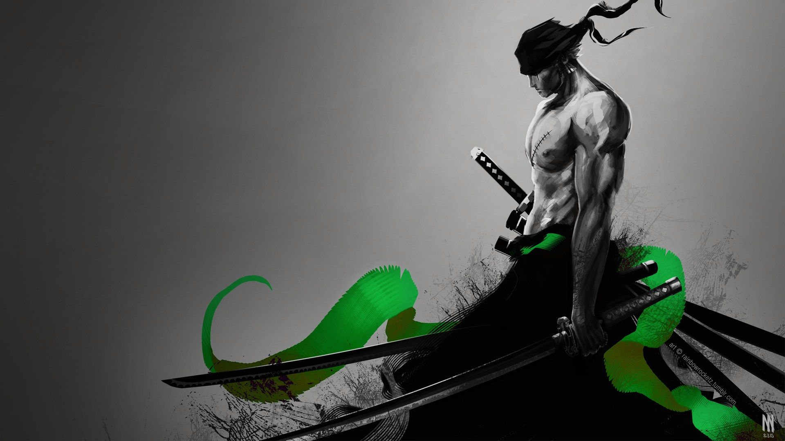

This a Picture of Yoruchi. Yoruchi is Upper-Rank Moon in most famous anime Demon Slayer. Yoruchi is the 1st Upper-Rank Moon. The Upper-Rank Moon works under Muzan, who is the lord of the demons. The Demons main goal is to devour on humans and to kill Demon Slayer Corps.

This is picture of Pirate. His name is Zoro. Zoro is actually the vice captain of the Straw Hat Pirates. He is the skilled in Swordsmanship. He is the first member of the Straw Hat pirates. His goal is to become Number One Swordsman in the Whole World. And defeat his rival Draqula Mihawk.